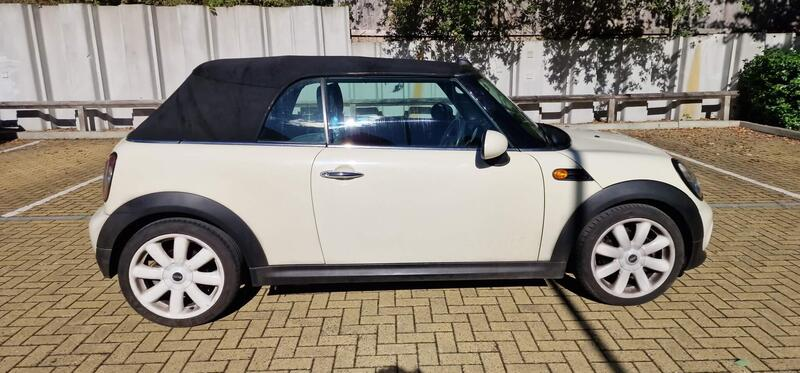
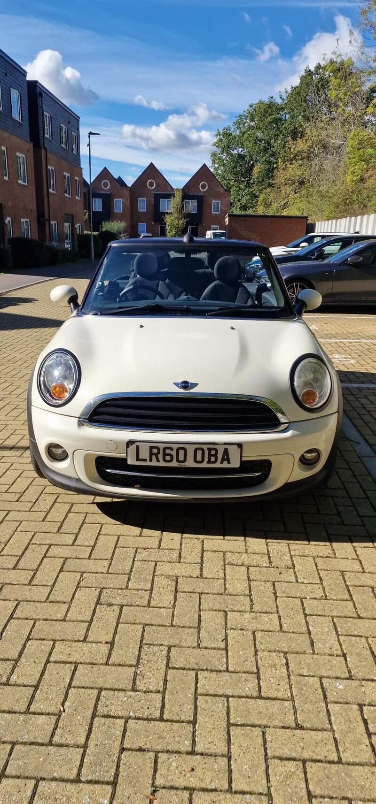
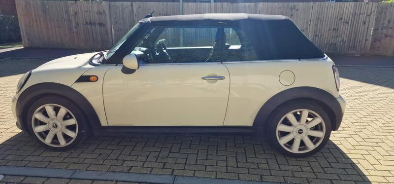
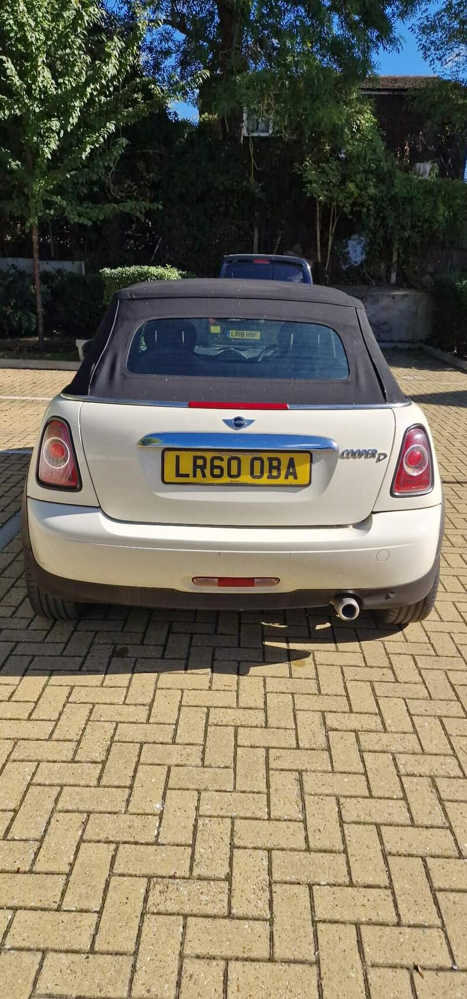

Seller photos from the AutoTrader ad.
MINI Convertible 1.6 Cooper D
A cheap-to-run diesel MINI with a year's MOT. Test the roof's lock-down carefully.
Key facts
| Price | £1,695 |
|---|---|
| Year | 2010 |
| Miles | 101,600 |
| Model | MINI Convertible 1.6 Cooper D |
| Colour | White |
| Registration | 2010 (60 reg) |
| Owners | 4 owners |
| Service history | Not stated |
| MOT (AutoTrader ad) | 19 Oct 2027 (ad) |
| Seller | Private |
| Location | Edenbridge |
| From GU7 | 30 mi (AutoTrader) |
| Listed on AutoTrader | 13/10/2026 |
| Checked | 15 October 2026 |
Why buy it
- A year's MOT; serviced 3,000 miles ago; new air-con condenser and recharge (ad)
- 50+ mpg diesel and £20 a year road tax (ad)
- 4 matching Kumho tyres with good tread; new reversing sensors (ad)
Things to check
The roof doesn't always lock out first time when fully down (ad): work it several times on the viewing
Euro 5 diesel, so not ULEZ-compliant if you drive into London
Check the roof drains and for damp carpets
- MINI Convertible R52/R57 weak spots
Not flagged as a major issue in our sources; check for water ingress via roof drains and seals. R52 CVT auto fails (avoid); supercharged R52 power-steering pump; pre-Nov 2011 Prince timing-chain tensioners; roof hydraulics £395–495 average repair, R57 roof from ~£1,735.
Seller says (extract)
“Does 50+mpg, more on a run, only 20 pounds tax a year, has 4 matching Kumho tyres with good tread, years mot, serviced 3000 miles ago. 4 electric windows, new reversing sensors, tyre pressure sensors, new air con condenser with air con recharge. Power roof with sunroof setting. Roof doesn't always lock out first time when fully down, can explain when viewing. Still works properly though, Very reliable, drives well and very cheap to run.…”